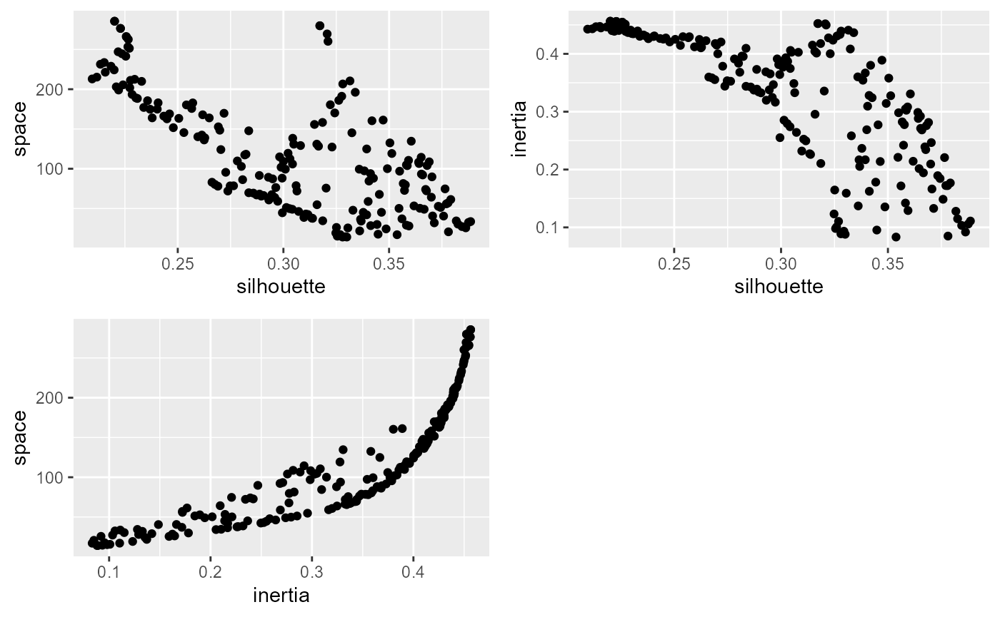
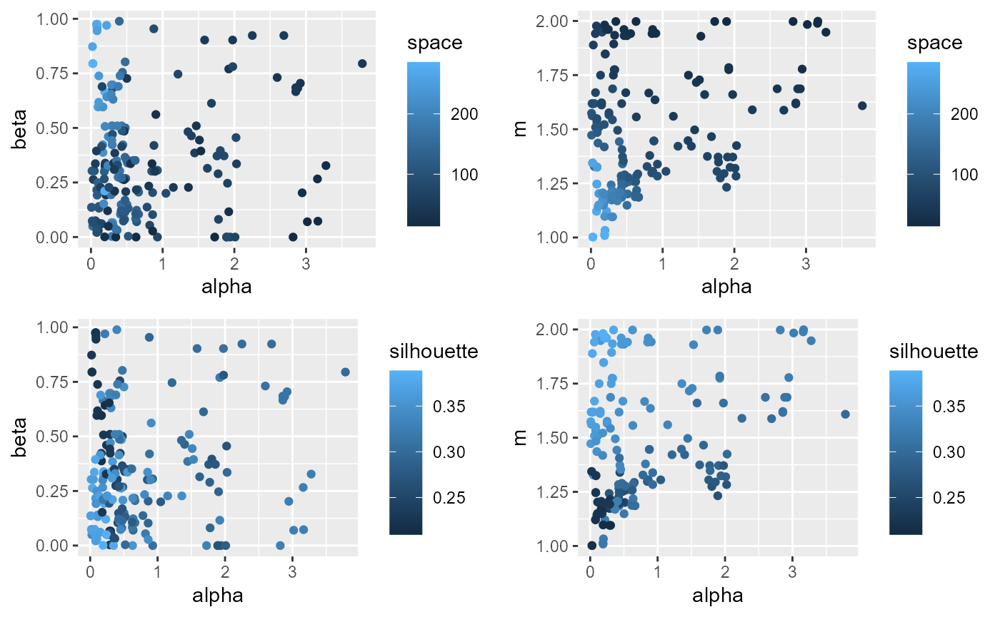

vignettes/web_vignettes/optimizing_parameters.Rmd
optimizing_parameters.RmdIn this vignette, we will illustrate how one can use a genetic algorithm to select hyperparameters for the spatial fuzzy clustering algorithm.
The proposed approach in the package (select_parameters)
can be seen as a grid search method. It can be calculation intensive
when the number of parameters increase. In the case of the SGFCM, three
numeric parameters (alpha, beta, and
m) must be selected by the user. If one decide to add a
noise cluster, with also have to select delta.
If the number of clusters (k) is already selected, we
can use a genetic algorithm to optimize the choice of these
hyperparameters. In the case of a spatial clustering, we have two
objective functions to optimize: the spatial consistency and the
clusters validity.
We show here how it can be done with the package nsga2R.
This method also illustrate how the two objectives are concurrent and no
solution can fulfill both of them, but some solutions provide
interesting compromises. For more information about the multiobjective
genetic algorithm, you could check this link.
We start by loading the data and create a fitness function that will be used by the genetic algorithm.
library(geocmeans, quietly = TRUE)
library(sf, quietly = TRUE)
library(spdep, quietly = TRUE)
library(ggplot2, quietly = TRUE)
library(ggpubr, quietly = TRUE)
library(tmap, quietly = TRUE)
library(nsga2R, quietly = TRUE)
library(plotly, quietly = TRUE)
data(LyonIris)
AnalysisFields <-c("Lden","NO2","PM25","VegHautPrt","Pct0_14",
"Pct_65","Pct_Img","TxChom1564","Pct_brevet","NivVieMed")
Data <- st_drop_geometry(LyonIris[AnalysisFields])
# create the spatial weight matrix
Neighbours <- poly2nb(LyonIris,queen = TRUE)
WMat <- nb2listw(Neighbours,style="W",zero.policy = TRUE)We try to otpimize a SGFCM with 3 parameters :
m, the fuzzyness index (limited between 1 and 2)alpha, the weight given to the spatially lagged dataset
(limited between 0 and 5)beta, control classification crispness (between 0 and
0.99)We want to obtain a classification with a good quality (maximizing the silhouette index) and a good spatial consistency (minimizing spatial inconsistency). We also add the explained inertia as a third objective function.
fintess_func <- function(x){
m <- x[[1]]
alpha <- x[[2]]
beta <- x[[3]]
k <- 4
clustering <- SGFCMeans(Data,
WMat,
k = k,
m = m,
alpha = alpha,
beta = beta,
robust = TRUE,
tol = 0.01,
standardize = TRUE,
verbose = FALSE,
maxiter = 1000,
seed = 123,
init = "kpp")
sil <- calcSilhouetteIdx(data = clustering$Data,
belongings = clustering$Belongings)
inertia <- calcexplainedInertia(data = clustering$Data,
belongmatrix = clustering$Belongings)
space_idx <- spConsistency(clustering, nblistw = WMat, nrep = 1)
scores <- c(-sil, space_idx$sum_diff, -inertia)
return(scores)
}This can be a long step, but this function could be easily paralellized.
We combine the scores obtained in one dataframe and then we can start the analysis of the proposed solutions.
df_params <- data.frame(results$parameters)
names(df_params) <- c("m","alpha","beta")
df_scores <- data.frame(results$objectives)
names(df_scores) <- c("silhouette","space","inertia")
df_tot <- cbind(df_params, df_scores)
df_tot$silhouette <- df_tot$silhouette * -1
df_tot$inertia <- df_tot$inertia * -1
df_tot <- round(df_tot,4)
p1 <- ggplot(df_tot) +
geom_point(aes(x = silhouette, y = space))
p2 <- ggplot(df_tot) +
geom_point(aes(x = silhouette, y = inertia))
p3 <- ggplot(df_tot) +
geom_point(aes(x = inertia, y = space))
ggarrange(p1,p2,p3, ncol = 2, nrow = 2)
It seems that the algorithm is able to find a set of solutions that minimize simultaneously the silhouette index and the spatial inconsistency, but finding a compromise between the explained inertia and the spatial consistency is difficult.
p1 <- ggplot(df_tot) +
geom_point(aes(x = alpha, y = beta, color = space))
p2 <- ggplot(df_tot) +
geom_point(aes(x = alpha, y = m, color = space))
p3 <- ggplot(df_tot) +
geom_point(aes(x = alpha, y = beta, color = silhouette))
p4 <- ggplot(df_tot) +
geom_point(aes(x = alpha, y = m, color = silhouette))
ggarrange(p1,p2,p3,p4, ncol = 2, nrow = 2)alpha is positively correlated with a lower value of
spatial inconsistency, but is also negatively correlated with the
silhouette index. m is positively associated with the
silhouette index and the spatial consistency.
The following 3D plot clearly demonstrates the Pareto front: the set of dominant solutions. It forms a curved plane.
plot_ly(df_tot, x = ~silhouette, y = ~inertia, z = ~space) %>%
add_markers() %>%
add_trace(type = "mesh3d", opacity = 0.5, facecolor = "grey") %>%
layout(scene = list(xaxis = list(title = 'silhouette'),
yaxis = list(title = 'explained inertia'),
zaxis = list(title = 'spatial inconsistency')))To select a solution, we will limit our choices to the results with a silhouette index above 0.34 and an explained above 0.30.
solutions <- subset(df_tot,
df_tot$silhouette >= 0.34 &
df_tot$inertia >= 0.30)
knitr::kable(solutions, digits = 2)| m | alpha | beta | silhouette | space | inertia | |
|---|---|---|---|---|---|---|
| 9 | 1.47 | 0.01 | 0.14 | 0.36 | 134.64 | 0.33 |
| 43 | 1.33 | 0.05 | 0.07 | 0.35 | 161.20 | 0.39 |
| 50 | 1.44 | 0.10 | 0.25 | 0.35 | 132.52 | 0.36 |
| 59 | 1.51 | 0.11 | 0.13 | 0.36 | 104.82 | 0.30 |
| 75 | 1.52 | 0.11 | 0.14 | 0.36 | 103.89 | 0.30 |
| 78 | 1.53 | 0.08 | 0.22 | 0.36 | 110.56 | 0.31 |
| 97 | 1.52 | 0.19 | 0.27 | 0.35 | 100.09 | 0.31 |
| 114 | 1.34 | 0.02 | 0.05 | 0.34 | 160.34 | 0.38 |
| 122 | 1.48 | 0.09 | 0.19 | 0.35 | 119.19 | 0.33 |
| 136 | 1.50 | 0.37 | 0.33 | 0.34 | 88.05 | 0.32 |
| 153 | 1.54 | 0.30 | 0.47 | 0.34 | 93.92 | 0.33 |
| 162 | 1.69 | 0.30 | 0.68 | 0.34 | 84.51 | 0.31 |
We will select the one of the obtained solutions we found here. It
has the rank 153 in the final set of solutions. We also compare it with
the solution we selected with a grid search approach in the vignette
introduction.
version1 <- SGFCMeans(Data,WMat ,k = 4,m=1.5, alpha=0.95, beta = 0.65,
standardize = TRUE, robust = TRUE,
verbose = FALSE, seed = 123,
tol=0.0001, init = "kpp")
parameters <- as.list(solutions[11,])
version2 <- SGFCMeans(Data,WMat ,k = 4,
m = parameters$m,
alpha=parameters$alpha,
beta = parameters$beta,
standardize = TRUE, robust = TRUE,
verbose = FALSE, seed = 123,
tol=0.0001, init = "kpp")
# calculating the indexes for the clustering
idx1 <- calcqualityIndexes(data = version1$Data,
belongmatrix = version1$Belongings,
m = version1$m,
indices = c("Silhouette.index",
"XieBeni.index", "FukuyamaSugeno.index",
"Explained.inertia"))
idx2 <- calcqualityIndexes(data = version2$Data,
belongmatrix = version2$Belongings,
m = version2$m,
indices = c("Silhouette.index",
"XieBeni.index", "FukuyamaSugeno.index",
"Explained.inertia"))
# calculating the spatial indexes
space1 <- spatialDiag(version1,nrep = 150)
space2 <- spatialDiag(version2,nrep = 150)
idx1$spatial.Consistency <- space1$SpConsist
idx2$spatial.Consistency <- space2$SpConsist
scores <- round(cbind(do.call(c,idx1), do.call(c,idx2)),4)
colnames(scores) <- c("reference","optimized")
scores <- data.frame(scores)
tests <- c(1, -1, -1, 1,-1)
test1 <- ifelse((scores[,1] > scores[,2]),1,-1) * tests * -1
scores$better <- ifelse(test1 == -1, FALSE, TRUE)
knitr::kable(scores)| reference | optimized | better | |
|---|---|---|---|
| Silhouette.index | 0.2980 | 0.3403 | TRUE |
| XieBeni.index | 2.0611 | 1.8835 | TRUE |
| FukuyamaSugeno.index | 1976.3404 | 1646.7294 | TRUE |
| Explained.inertia | 0.3292 | 0.3281 | FALSE |
| spatial.Consistency | 0.1502 | 0.2241 | FALSE |
The optimized version gives a slightly lower spatial consistency, but also a significantly higher silhouette index.